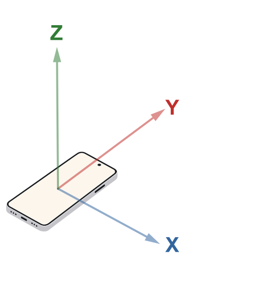

Coordinar un ensayo
Dibuja la planta, asigna los puntos e invita a otros teléfonos.
PASARELAS UPMAprendizaje y Servicio
Vibration Web for Operational Modal AnalysisLearning Experience
INSTRUMENTACIÓN EN TU TELÉFONO
Registra una pasarela, mide con tu teléfono o coordina varios dispositivos en un ensayo conjunto.
TRABAJO DE CAMPO
Del reconocimiento de campo al ensayo dinámico.
Sitúa la pasarela con tu ubicación actual o eligiendo un punto directamente en el mapa.
Latitud: -
Longitud: -
Precisión / método: -
Añade varias fotografías que permitan identificar y documentar correctamente la pasarela.
Se recomienda incluir:
0 fotografías añadidas
VWOMA · ENSAYO MULTIPUNTO
Crea una sesión o introduce una invitación.
Dibuja la planta, asigna los puntos e invita a otros teléfonos.
Conéctate al Wi-Fi del ensayo y abre la invitación del maestro.
Prototipo experimental. La conexión entre navegadores no garantiza la sincronización física de los acelerómetros.
Coordenadas en metros. Origen en la esquina inferior izquierda.
Doble toque o doble clic en una zona libre del tablero para añadir un punto. Arrastra para mover puntos o desplazar el plano; rueda o pellizca para ampliar dentro de la ventana.
Edita las coordenadas o el sensor. Desliza una fila hacia la izquierda para eliminar.
| Punto | X (m) | Y (m) | Sensor |
|---|
Mantén la página visible. Se registra aceleración con gravedad en los tres ejes; el procesado puede eliminar la componente constante.
El RTT mide la ida y vuelta de los mensajes. El desfase estimado corresponde a los relojes de las páginas, no al desfase físico entre sensores. Una conexión directa no certifica el SSID.
Primero corrige el signo de los ejes de cada móvil. Después se ajustan los relojes y se valida el desfase físico con los móviles fijados a una misma tablilla.
Cada gesto solo determina si el registro de ese eje se multiplica por +1 o por −1. No se intercambian ejes.

Quédate quieto durante 3 s y desplaza el móvil en línea recta hacia delante y hacia atrás durante los 6 s siguientes, sin girarlo. La aplicación elimina la continua y filtra la señal a 10 Hz.
Elige un único factor manual para los tres registros del sensor:
Fija los móviles paralelos sobre una tablilla rígida, separados 5–10 cm para evitar NFC. Se correlacionan exclusivamente X–X, Y–Y y Z–Z.
El maestro inicia una ráfaga de 200 intercambios a 20 Hz (10 s). Después guiará cada gesto con una cuenta atrás común. Mantén ambas pantallas visibles.
Previsualización local: X azul · Y rojo · Z verde. Todas las muestras recibidas se guardan.
Espectro en tiempo real hasta 30 Hz; se actualiza durante la adquisición.
La medida usa la calibración física aceptada. Durante el ensayo se mantienen 10 intercambios/s solo para diagnóstico; no desplazan la malla temporal.
La preparación usa 200 intercambios a 20 Hz y durante el ensayo se realizan 10 intercambios por segundo. El offset estima la diferencia entre relojes; la prueba física valida el desfase residual entre acelerómetros.
Bruto: muestras y marcas originales. Procesado: ejes calibrados, reloj maestro y malla temporal común; Z con detrend lineal.
X azul, Y rojo y Z verde. La línea del maestro es continua; las de los participantes son discontinuas. Puedes ampliar con rueda o dos dedos, arrastrar en X e Y, ocultar series desde la leyenda y restablecer el zoom.
Termina un ensayo y recibe los registros de los participantes para compararlos aquí.